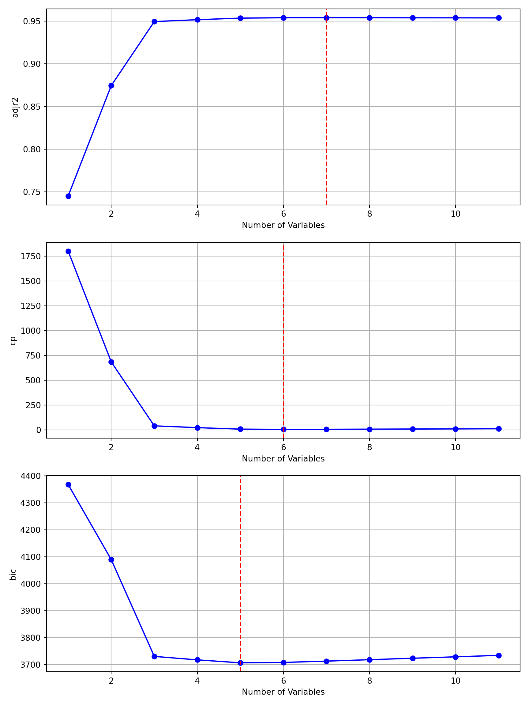
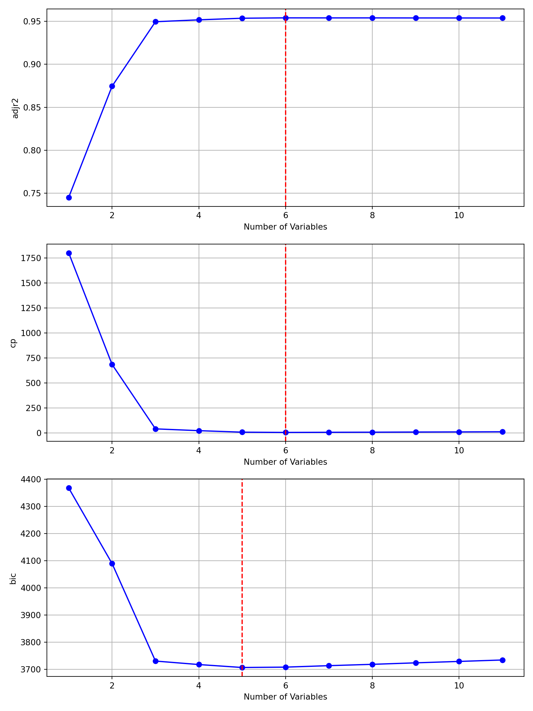

The classical linear model is a workhorse in data science and statistical learning. It is interpretable, intuitive, easy to fit and to explain. The model is computationally and mathematically straightforward, the properties of parameter estimators are easily derived and well understood.
Also, the classical linear model is surprisingly competitive against more complex alternatives.
Example: XOR Gate
The exclusive OR function–also called the XOR Gate–has two binary inputs, \(X_1 \in \{0,1\}\) and \(X_2 \in \{0,1\}\). The result of the gate is \(Y = 1\) if exactly one of the \(X\)s is 1, \(Y=0\) otherwise.
XOR Gate
\(X_1\)
\(X_2\)
\(Y\)
0
0
0
0
1
1
1
0
1
1
1
0
We will see in Chapter 32 how to model the XOR gate with an artificial neural network with a single hidden layer with 2 units. The neural network requires 9 parameters to perfectly model the gate. We could also create a linear model that perfectly models the gate, requiring only three parameters.
import statsmodels.api as smimport pandas as pdimport numpy as npdata = {'x1': [0,0,1,1], 'x2': [0,1,0,1], 'x1x2': [0,0,0,1], 'y': [0,1,1,0]}df = pd.DataFrame(data)X = df[['x1', 'x2', 'x1x2']]y = df['y']reg_ia = sm.OLS(y, X).fit()print(reg_ia.summary())
OLS Regression Results
=======================================================================================
Dep. Variable: y R-squared (uncentered): 1.000
Model: OLS Adj. R-squared (uncentered): 1.000
Method: Least Squares F-statistic: 6.761e+29
Date: Fri, 06 Jun 2025 Prob (F-statistic): 8.94e-16
Time: 08:21:36 Log-Likelihood: 135.28
No. Observations: 4 AIC: -264.6
Df Residuals: 1 BIC: -266.4
Df Model: 3
Covariance Type: nonrobust
==============================================================================
coef std err t P>|t| [0.025 0.975]
------------------------------------------------------------------------------
x1 1.0000 9.93e-16 1.01e+15 0.000 1.000 1.000
x2 1.0000 9.93e-16 1.01e+15 0.000 1.000 1.000
x1x2 -2.0000 1.72e-15 -1.16e+15 0.000 -2.000 -2.000
==============================================================================
Omnibus: nan Durbin-Watson: 2.000
Prob(Omnibus): nan Jarque-Bera (JB): 0.419
Skew: 0.652 Prob(JB): 0.811
Kurtosis: 2.097 Cond. No. 3.73
==============================================================================
Notes:
[1] R² is computed without centering (uncentered) since the model does not contain a constant.
[2] Standard Errors assume that the covariance matrix of the errors is correctly specified.
print(np.round(reg_ia.predict(),3))
[ 0. 1. 1. -0.]
The model \(Y = x_1 + x_2 - 2 x_1 x_2\) perfectly fits the gate. It has an \(R^2=1\), \(SSE=0\), and still one degree of freedom left for the error. The model has 1/3 the parameters of the neural network and is intrinsically interpretable.
The classical linear model works well if \(n \gg p\) and the input variables do not exhibit multicollinearity. If the model errors have zero mean, the least-squares estimators are unbiased, and thus the model is unbiased. However, it does not necessarily have the lowest mean-squared error. As \(p\) grows, for fixed sample size \(n\), problems start to mount:
The OLS estimator becomes more unstable, exacerbated by multicollinearity.
When \(p > n\), a unique OLS estimator does not exist, \((\textbf{X}^\prime\textbf{X})^{-1}\) cannot be computed.
Other estimation approaches lead to models with smaller mean-squared prediction error.
With increasing \(p\), relative to \(n\), the regression problem turns into a high-dimensional problem. Situations in which there are more input variables than observations are not at all uncommon.
Example: Microarray Analysis
A microarray is a rectangular array in which the expression of genes is compared between two samples, often a reference (healthy individual) and an experimental sample (cancer patient). The samples are dyed green and red. If gene expression is higher [lower] in the experimental sample the corresponding spot on the microarray appears red [green]. A 20 x 20 array yields 400 inputs, but you might have only data on 10 arrays.
Figure 8.1: A gene expression microarray
How can we address the shortcomings of the classical linear model as problems become higher dimensional?
Algorithmic feature selection uses search techniques and cross-validation to find well-fitting models among the \(2^p\) possible linear models you can build with \(p\) inputs (Section 8.1). The goal is to find a relatively small set of inputs that explains sufficient variability in the data and to eliminate inputs that do not contribute (much) to explaining the variability.
Regularization techniques consider all \(p\) inputs, even if \(p\) is large, and allay the shortcomings of the ordinary least squares estimator by penalizing its tendency toward instability (Section 8.2). Regularization penalties shrink the estimators toward zero, thereby limiting the variability they can inflict on the model. The resulting estimators are biased, but at the same time their variability is suppressed enough to lead to an overall smaller mean-square prediction error compared to ordinary least squares.
Dimension reduction methods derive \(m\) linear combinations of the \(p\) inputs where \(m \ll p\). The \(m\) combinations are treated as inputs to the model, thereby reducing the dimension of the regression while still consuming information from all \(p\) inputs (Section 8.3).
In summary, feature selection chooses a subset of the \(p\) inputs, regularization keeps all \(p\) inputs and introduces bias to limit variability, dimension reduction uses \(m < p\) linear combinations of the variables.
8.1 Algorithmic Feature Selection
Suppose you have \(p\) candidate input variables. How many possible linear models are there? One model without any inputs, one model with all \(p\) inputs, \(p\) models have a single input, and so on. The number of models having \(k \le p\) inputs is \[
{p \choose k} = \frac{p!}{k!(p-k)!}
\] and the total number of models is \[
\sum_{k=0}^p {p\choose k} = {p\choose0} + {p\choose 1} + \cdots + {p\choose p-1} + {p\choose p}
\] By the binomial theorem, \((x+y)^n = \sum_{k=0}^n {n\choose k}x^{n-k}y^{k}\). Setting \(x=y=1\), we find that the total number of models equals \(2^p\). This is a very large number even for moderate \(p\). With \(p=10\) there are “only” 1,024 models, with \(p=20\) this number increases to 1,048,576, with \(p=30\) there are 1,073,741,824 models–more than a billion.
Two-step Procedure
Evaluating all regression models becomes unfeasible quickly due to the large number of models. Instead, we use a two-step process:
Among the set \(\{M_k\}\) of \(k\)-size models, find the best candidate and call it \(M_k^*\).
Choose the single best model among \(M_0^*, M_1^*, \cdots, M_p^*\) (the “best of the best”).
The feature selection methods differ in how they construct the candidate sets \(\{M_k\}\) in step 1. For example, best subset selection uses efficient search algorithms to explore the space of possible models, forward selection considers \(\{M_k\}\) as a superset of \(\{M_{k-1}\}\), backward selection considers \(\{M_k\}\) as a subset of \(\{M_{k+1\}\).
In step 1 the “best” model is chosen among the \(k\)-size models using criteria such as SSE, \(R^2\), \(p\)-values, etc.
In step 2 the models are compared based on an estimate of test error using cross-validation or, more commonly, an indirect estimate of test error.
Tip
When choosing \(p\)-values to judge models against each other during variable selection, you are performing many tests and you are not testing hypotheses in the typical sense. Feature selection is not akin to formulating a research hypothesis, collecting data, and testing whether the data support the hypothesis. The use of \(p\)-values during variable selection is more akin to a rough check whether adding or removing a feature should be considered. Thus, larger thresholds such as \(p=0.1\) or \(p=0.2\) are used, rather than \(p=0.01\) or \(p=0.05\) as in standard hypothesis testing.
Even if the process would be testing hypotheses in the usual sense, the large number of comparisons, each with a chance of a Type-I or Type-II error, creates a massive multiplicity (multiple testing) problem.
Note
Feature selection methods in software do not necessarily use a two-step procedure. For example, software might use \(p\)-values to determine whether adding input variables in forward selection significantly improves the model and stop the process if no input variable that is currently not in the model improves the model according to the \(p\)-value threshold. Similarly, in backward elimination the process might stop if no input variable can be removed from the model without “significantly” (according to the chosen \(p\)-level) deteriorating the model.
These procedures do not seek the best \(k\)-input models and do not compare them in a second step.
Indirect Estimates of Test Error
Cross-validation approaches such as train:test split, leave-one-out cross-validation, or \(k\)-fold cross-validation produce a direct estimate of the mean-squared prediction error. Indirect estimates of the test error make adjustments to quantities derived from the training data and are easy to compute. These estimates are used to quickly quantify model performance without random elements and to compare non-nested models. The best \(M_k^*\) and best \(M_j^*\) models in feature selection are not necessarily nested in the sense that one model can be reduced from the other–they might have completely different inputs. Those models cannot be compared based on \(p\)-values or just SSE. Some adjustments is necessary to incorporate the model complexity and to avoid overfitting.
Mallows’ \(C_p\)
The \(C_p\) statistic of Mallows (1973) estimates the average sum of prediction errors \[
\Gamma_p = \frac{1}{\sigma^2}\text{E}\left [\sum_{i=1}^n \left(\widehat{Y}_i - \text{E}[Y_i|\textbf{x}_i]\right)^2 \right]
\] It is a prediction-oriented criteria that seeks to strike a balance between the bias of an underfit model and the variability of an overfit model. \(\Gamma_p\) expands into \[
\Gamma_p = \frac{1}{\sigma^2} \left(\sum_{i=1}^n\text{Var}[\widehat{Y}_i] + \sum_{i=1}^n\left[\text{Bias}(\widehat{Y}_i)\right]^2 \right)
\tag{8.1}\]
The contribution of an overfit model is the first term in parentheses, \(\text{Var}[\widehat{Y}_i]\), the contribution of an underfit model is the squared bias term. It is insightful to take a look at the first piece, the sum of the variances of the predicted values. Suppose we have a model with \(d\) inputs. From \(\widehat{\textbf{Y}} = \textbf{X}\widehat{\boldsymbol{\beta}}\) it follows that \[
\text{Var}[\widehat{\textbf{Y}}] = \sigma^2 \textbf{X}(\textbf{X}^\prime\textbf{X})^{-1}\textbf{X}^\prime = \sigma^2 \textbf{H}
\] The Hat matrix is a projection matrix of rank \(d+1\) and thus \[
\sum_{i=1}^n \text{Var}[\widehat{Y}_i] = \sigma^2(d+1)
\]
The sum of the variances of the predicted values will go up when inputs are added to the model, whether the inputs are useful in explaining variability in \(Y\) or not. Adding junk variables to a model results in greater variability of the predicted values–there is “no free lunch”.
The bias term in Equation 8.1 can be estimated as \[
(\widehat{\sigma}^2_d - \sigma^2)(n-d-1)
\] where \(\widehat{\sigma}^2_d\) is the estimate of \(\sigma^2\) in a model with \(d\) inputs. Putting everything together we arrive at an estimator of \(\Gamma_p\), known as Mallow’s \(C_p\) statistic \[
C_p = \frac{1}{\widehat{\sigma}^2}\left(\widehat{\sigma}^2(d+1) + (\widehat{\sigma}^2_d - \widehat{\sigma}^2)(n-d-1) \right) = \frac{\text{SSE}}{\widehat{\sigma}^2} - n + 2(d+1)
\] where \(d\) is the number of inputs in the model, \((d+1)\) accounts for the intercept. In feature selection, \(\widehat{\sigma}^2\) is based on the full model with \(p\) inputs, since this model most likely yields the least biased estimator of the variance of the model errors. Among a set of competing models, select the one with the smallest\(C_p\) statistic. Among models with the same number of inputs, \(d\), selection based on \(C_p\) leads to choosing the model with the smallest SSE. The term \(2(d+1)\) can be viewed as a penalty term for model complexity. A larger model has to reduce SSE more substantially to overcome the additional parameters.
An alternative formulation for Mallow’s statistic is \[
C_p^\prime = \frac{1}{n}\left(\text{SSE} + 2(d+1)\widehat{\sigma}^2\right)
\]\(C_p\) and \(C_p^\prime\) are not identical but they lead to the selection of the same model if models are chosen according to smaller \(C_p\) or smaller \(C_p^\prime\) values.
AIC and BIC
Akaike’s Information Criterion (AIC) and the Bayesian Information Criterion (BIC) are based on likelihood theory and assume a distribution for the data, given the parameter estimates. In linear models, this distribution is typically Gaussian, and the criteria are computed as follows:
\[
\begin{align*}
\text{AIC} &= n\log \left(\frac{\text{SSE}}{n}\right) + 2(d+1) \\
\text{BIC} &= n\log \left(\frac{\text{SSE}}{n}\right) + \log(n)(d+1)
\end{align*}
\] In this formulation, choose the model with the smaller AIC and smaller BIC. Selection based on AIC and \(C_p\) lead to the same model.
BIC applies a stronger complexity penalty when \(\log(n) > 2\), (\(n > 7\)), and thus tends to select models smaller than \(C_p\) or AIC.
Adjusted \(R^2\)
This statistic applies a correction to \(R^2\) that penalizes larger models. It is not an estimate of the test error, but is still useful to select models. For a model with \(d\) inputs, \[
\text{Adjusted } R^2 = 1 - \frac{\text{SSE}}{\text{SST}}\left(\frac{n-1}{n-d-1} \right) = 1-(1-R^2)\left(\frac{n-1}{n-d-1} \right)
\] When inputs are added to a model, SSE decreases and \(R^2\) increases. However, \(\text{SSE}/(n-d-1)\) may increase or decrease. If unimportant variables are added, the reduction in SSE does not offset the loss of degree of freedom and Adjusted \(R^2\) will be smaller. When selecting models based on Adjusted \(R^2\), choose the model with the larger value.
Best Subset Selection
The concept of best subset selection is simple, find the model that has the best value of a fit criterion such as \(C_p\), AIC, BIC, etc., among all possible models. As outlined previously, model selection is carried out in two steps: find the best 1-input, 2-input, 3-input, …, model in the first step and identify the best \(k\)-input model in the second step.
Exploring the space of all possible models by brute force is computationally expensive and possibly prohibitive as \(p\) grows. The LEAPS algorithm of Furnival and Wilson (1974) uses an efficient branch-and-bound algorithm to explore the model space and avoids visiting all possible models. It uses a separate tree as the bounding function that eliminates models that need not be considered given the branches of models that have already been seen. This algorithm is implemented as method="exhaustive" in the regsubsets function of the leaps package in R. In Python there is no implementation of the LEAPS algorithm, performing best subset regression uses a brute force method that iterates over all possible models.
Example: Credit Data from ISLR2
We are using here the Credit data from James et al. (2021, Sec 3.3, p.85). The data are simulated observations (400) on
Income: income in $1,000
Limit: credit limit
Rating: credit rating
Cards: number of credit cards
Age: age in years
Education: education in years
Own: two-level factor whether individual owns a home (“Yes”/“No”)
Student: two-level factor whether individual is a student (“Yes”/“No”)
Married: two-level factor whether individual is married (“Yes”/“No”)
Region: three-level factor of geographic location (“East”, “South”, “West”)
Balance: average credit card balance in $
The target variable is Balance.
There are 10 input variables, 6 numeric variables, 3 two-level factors and one three-level factor (Region). When all variables are included, this leads to a model with \(p = 6 + 3 + 2 = 11\) predictors. The three-level Region variable expands to two columns in \(\textbf{X}\), the first level serves as default as the reference level.
The following code performs best subset regression with the leaps algorithm. The nvmax parameter limits the maximum size of subsets to examine by the leaps-and-bound algorithm; the default is nvmax=8. Setting it to NULL forces the algorithm to consider all subsets up to size \(p\).
With \(p=11\) predictors, there are 11 sets \(\{M_1\}, \cdots, \{M_{11}\}\). The best single-predictor model–the best model in the set \(\{M_1\}\)– is \[
M_1^*: \text{Balance} = \beta_0 + \beta_1\text{Rating} + \epsilon
\] The best model in \(\{M_2\}\) is \[
M_2^*: \text{Balance} = \beta_0 + \beta_1\text{Income} + \beta_2\text{Rating} + \epsilon
\] and so on. Notice that Rating is included in \(M_1^*\), \(M_2^*\), and \(M_3^*\) but is not present in \(M_4^*\).
To select the best model from the best \(k\)-input models, we look at the model summary performance measures:
Selecting models according to \(C_p\), the best 6-input model is chosen. Based on BIC and Adjusted \(R^2\), we would choose the best 4-input and best 7-input model, respectively (Figure 8.2).
which.min(s_all$cp)
[1] 6
which.min(s_all$bic)
[1] 4
which.max(s_all$adjr2)
[1] 7
Figure 8.2: Results of best subsets regression.
The following statements read the Credit data set from the DuckDB database and convert the categorical variables to numeric variables using one-hot encoding with pd.get_dummies. One of the encoded columns is dropped for each categorical variable to match the design matrix layout in R.
Python does not have a function to perform best subset regression with the LEAPS algorithm, so we roll our own brute force implementation. After parsing the model formula and extracting the target and input variables, itertools is used to create the sets \(\{M_1\}, \cdots, \{M_11\}\) and the best \(k\)-input model is selected based on the highest \(R^2\).
import numpy as npimport statsmodels.api as smfrom itertools import combinationsimport matplotlib.pyplot as pltdef regsubsets(formula, data, method="exhaustive", nvmax=None):""" Python implementation similar to R's regsubsets function Parameters: ----------- formula : str A formula like 'y ~ x1 + x2 + x3' data : pandas.DataFrame The dataset containing the variables method : str Method for subset selection ('exhaustive' is implemented here) nvmax : int or None Maximum number of predictors to consider Returns: -------- dict : A dictionary containing results for each model size """# Parse formula y_var, x_vars = formula.split('~') y_var = y_var.strip() x_vars = [x.strip() for x in x_vars.split('+')]# Remove '.' and replace with all columns except y_varif'.'in x_vars: x_vars.remove('.') all_cols = [col for col in data.columns if col != y_var] x_vars.extend(all_cols)# Remove duplicates# x_vars = list(set(x_vars))# Prepare response variable y = data[y_var]# Set nvmax if not specifiedif nvmax isNone: nvmax =len(x_vars)else: nvmax =min(nvmax, len(x_vars))# Results container results = {'which': [], # Boolean matrix of selected variables'rsq': [], # R-squared values'rss': [], # Residual sum of squares'adjr2': [], # Adjusted R-squared'cp': [], # Mallows' Cp'bic': [], # BIC'outmat': [], # Matrix of coefficients'nvars': [], # Number of variables in each model'var_names': x_vars # Variable names }# Calculate full model RSS for Cp statistic X_full = sm.add_constant(data[x_vars]) full_model = sm.OLS(y, np.asarray(X_full)).fit() full_rss =sum(full_model.resid **2) n =len(y) p_full =len(x_vars) +1# +1 for intercept# Evaluate all possible subsetsfor size inrange(1, nvmax +1): best_rsq =-np.inf best_model =None best_vars =None# For each subset size, try all combinationsfor combo in combinations(x_vars, size):# Prepare predictors (add constant for intercept) X = sm.add_constant(data[list(combo)])try:# Fit the model model = sm.OLS(y, X).fit()# Calculate metrics rsq = model.rsquared# Keep track of the best model for this sizeif rsq > best_rsq: best_rsq = rsq best_model = model best_vars = comboexcept:continueif best_model isnotNone:# Create boolean vector for selected variables which = [x in best_vars for x in x_vars]# Calculate metrics for the best model of this size rss =sum(best_model.resid **2)# rsq = best_model.rsquared adjr2 = best_model.rsquared_adj p = size +1# +1 for intercept cp = (rss / (full_rss / (n - p_full))) - (n -2* p) bic = n * np.log(rss / n) + p * np.log(n)# Get coefficients coefs = best_model.params.tolist()# Store results results['which'].append(which) results['rsq'].append(rsq) results['rss'].append(rss) results['adjr2'].append(adjr2) results['cp'].append(cp) results['bic'].append(bic) results['outmat'].append(coefs) results['nvars'].append(size)return results
The following code calls the regsubsets function and displays the input variables for the \(k\)-input step.
With \(p=11\) predictors, there are 11 sets \(\{M_1\}, \cdots, \{M_{11}\}\). The best single-predictor model–the best model in the set \(\{M_1\}\)– is \[
M_1^*: \text{Balance} = \beta_0 + \beta_1\text{Rating} + \epsilon
\] The best model in \(\{M_2\}\) is \[
M_2^*: \text{Balance} = \beta_0 + \beta_1\text{Income} + \beta_2\text{Rating} + \epsilon
\] and so on. Notice that Rating is included in \(M_1^*\), \(M_2^*\), and \(M_3^*\) but is not present in \(M_4^*\).
from itertools import compressregfit = regsubsets("Balance ~ .", data=credit_encoded, method="exhaustive", nvmax=None)for i inrange(len(regfit['which'])): ll =list(compress(regfit['var_names'],regfit['which'][i]))print(f"Best model with {i+1} predictors: {ll}")
Best model with 1 predictors: ['Rating']
Best model with 2 predictors: ['Income', 'Rating']
Best model with 3 predictors: ['Income', 'Rating', 'StudentYes']
Best model with 4 predictors: ['Income', 'Limit', 'Cards', 'StudentYes']
Best model with 5 predictors: ['Income', 'Limit', 'Rating', 'Cards', 'StudentYes']
Best model with 6 predictors: ['Income', 'Limit', 'Rating', 'Cards', 'Age', 'StudentYes']
Best model with 7 predictors: ['Income', 'Limit', 'Rating', 'Cards', 'Age', 'OwnYes', 'StudentYes']
Best model with 8 predictors: ['Income', 'Limit', 'Rating', 'Cards', 'Age', 'OwnYes', 'StudentYes', 'RegionWest']
Best model with 9 predictors: ['Income', 'Limit', 'Rating', 'Cards', 'Age', 'OwnYes', 'StudentYes', 'MarriedYes', 'RegionWest']
Best model with 10 predictors: ['Income', 'Limit', 'Rating', 'Cards', 'Age', 'OwnYes', 'StudentYes', 'MarriedYes', 'RegionSouth', 'RegionWest']
Best model with 11 predictors: ['Income', 'Limit', 'Rating', 'Cards', 'Age', 'Education', 'OwnYes', 'StudentYes', 'MarriedYes', 'RegionSouth', 'RegionWest']
Figure 8.3 displays the Adjusted \(R^2\), \(C_p\), and BIC values of the best \(k\)-input regressions. If selection of the best model in step 2 of the process is based on Adjusted \(R^2\), the best seven-predictor model is chosen. If selection is based on \(C_p\) or BIC, the best models with 6 or 4 inputs are chosen, respectively.
def plot_regsubsets(summary_results):""" Plot the results from regsubsets Parameters: ----------- summary_results : dict Results from summary_regsubsets function """ metrics = ['adjr2', 'cp', 'bic'] n_plots =len(metrics) fig, axes = plt.subplots(n_plots, 1, figsize=(9, 12))for i, metric inenumerate(metrics): l = summary_results[metric] axes[i].plot(summary_results['nvars'], l, 'bo-') axes[i].set_xlabel('Number of Variables') axes[i].set_ylabel(metric) axes[i].grid(True)if metric =='adjr2': lev_vars = l.index(max(l))+1else: lev_vars = l.index(min(l))+1 axes[i].axvline(x=lev_vars, linestyle='--', color='red') plt.tight_layout() plt.show()plot_regsubsets(regfit)
Figure 8.3: Fit statistics for the best \(k\)-input models from best subset regression.
Forward Selection
Forward selection greatly reduces the number of models being evaluated, since at each stage \(k\), the set \(\{M_{k+1}\}\) contains the \(p-k\) models with one additional predictor variable. The process starts with the null model, \(M_0\), containing only the intercept. All \(p\) predictors are then evaluated and the “best” is added to the model. Depending on the criteria, this is the predictor that reduces SSE or increases \(R^2\) the most, or has the smallest \(p\)-value. Suppose that \(x_4\) was added to the model in this round. We now have \(M_1^*\) and define as \(\{M_2\}\) the set of models that contain \(x_4\) and one additional predictor. At this stage we evaluate only \(p-1\) models, rather than \({p \choose 2}\) models.
In summary, only one predictor is added during each stage of forward selection, input variables that have been added in a previous stage remain in the model, and the total number of models evaluated is \[
\sum_{k=0}^p (p-k) = 1 + \frac{p(p+1)}{2}
\] Recall that with \(p=30\), evaluating all models requires visiting 1,073,741,824 models. Forward selection evaluates only 466 of them.
Forward selection has clear advantages:
the number of models evaluated is small
the algorithm can be applied when \(p > n\) since it does not need to fit a model with all predictors
There are also some clear disadvantages:
it is not guaranteed that the algorithm visits the best model; in fact it is not even guaranteed that the algorithm finds the best \(k\)-size model if \(k \ge 1\).
variables that are added early in the cycle can become unimportant with the addition of variables later in the cycle. A variable is not removed by the algorithm once it is added to the model.
To illustrate these points, consider that \(x_4\) is added to the model at stage \(k=0\). At \(k=1\) input variable \(x_2\) is chosen because it reduces SSE the most when one of the remaining predictors are added to a model that contains \(x_4\). The model \(M_2^*\) has inputs \(\{x_4, x_2\}\) according to forward selection. The best two-predictor model might be \(\{x_1,x_3\}\) if all possible models with \(p=2\) had been examined.
After the best \(k\)-size models are found, the winning model is selected among those based on \(C_p\), BIC, Adjusted \(R^2\), or cross-validation. This is the second step of the general procedure for feature selection.
Note
A form of forward selection does not select among the \(M_k^*\) models in the second step. Instead, it specifies threshold values that a variable has to overcome to get added to the model, for example, a \(p\)-value < 0.1. Forward selection then continues until no variable outside of the model can be added to the model. If this happens at stage \(k+1\), the process stops and \(M_k^*\) is chosen as the winning model.
Example: Credit Data from ISLR2 (Cont’d)
Forward selection can be performed with method="forward" in regsubsets:
In the first step of the algorithm, \(k=0\), the variable Rating is added. It adds the greatest improvement over the intercept-only model among the 11 predictor variables. From now on, every model will contain the Rating variable. Recall that in best subset selection this variable was not part of the best 4-predictor model.
Choosing BIC as the criterion to select among \(M_1^*\)–\(M_{11}^*\), the 5-predictor model is chosen; it has the smallest BIC:
The best subset selection and forward selection algorithm lead to similar models
Models selected by best subset and forward selection
Algorithm
BIC
Best Subset
Income
Limit
Cards
StudentYes
-1198.1
Forward
Income
Limit
Rating
Cards
StudentYes
-1197.1
Forward selection (and other feature selection methods) are implemented in the mlxtend library for regression models or classifiers from scikit-learn. The SequentialFeatureSelector supports forward, backward, and “floating” versions of those in which inputs that were added (dropped) can be included (excluded) later on. That makes the floating versions akin to stepwise selection (see below).
Because mlxtend works with scikit-learn models, the first step of the selection, determining the best \(k\)-input models, uses LinearRegression. Evaluating the models in the second step can use a different fitting method; we use statsmodels in the second step.
import pandas as pdimport numpy as npfrom mlxtend.feature_selection import SequentialFeatureSelectorfrom sklearn.linear_model import LinearRegressionimport matplotlib.pyplot as pltimport statsmodels.api as smdef feature_selection(X, y, method="forward", max_features=None, cv=0):""" Performs forward selection similar to leaps::regsubsets(method="forward") Parameters: ----------- X : pandas DataFrame Predictors y : pandas Series Response variable max_features : int or None Maximum number of features to select Returns: -------- dict : Results including selected features and metrics """if max_features isNone: max_features = X.shape[1]# Initialize LinearRegression model lr = LinearRegression() float_method =False forward_method =True num_features = max_featuresif method=="backward": forward_method =False num_features =1if method=="stepwise": float_method =True# Create the sequential forward selector sfs = SequentialFeatureSelector(lr, k_features=num_features, forward=forward_method, floating=float_method, scoring='r2', cv=cv ) sfs.fit(X, y)# Fit full model to get RSS for Cp X_full = sm.add_constant(X) full_model = sm.OLS(y, np.asarray(X_full)).fit() full_rss =sum(full_model.resid **2) p_full = X.shape[1] +1# +1 for intercept full_model.summary() # Results container results = {'which': [], # Boolean matrix of selected variables'rsq': [], # R-squared values'rss': [], # Residual sum of squares'adjr2': [], # Adjusted R-squared'cp': [], # Mallow's Cp statistic'bic': [], # BIC'var_names': X.columns.tolist(),'nvars': [] # Number of variables in each model } n =len(y)# Loop through each subset size and get metricsfor i inrange(1, max_features +1):# Get feature subset of size i feature_subset =list(sfs.subsets_[i]['feature_idx']) X_subset = X.iloc[:, feature_subset] X_with_const = sm.add_constant(X_subset) model = sm.OLS(y, X_with_const).fit()# Calculate metrics rsq = model.rsquared rss =sum(model.resid **2) adjr2 = model.rsquared_adj p = i +1# +1 for intercept bic = n * np.log(rss / n) + p * np.log(n) cp = (rss / (full_rss / (n - p_full))) - (n -2* p)# Create boolean vector for selected variables which = [j in feature_subset for j inrange(X.shape[1])]# Store results results['which'].append(which) results['rsq'].append(rsq) results['rss'].append(rss) results['adjr2'].append(adjr2) results['cp'].append(cp) results['bic'].append(bic) results['nvars'].append(i)return results
forward_sel = feature_selection(credit_encoded.drop('Balance',axis=1), credit_encoded['Balance'], method="forward")for i inrange(len(forward_sel['which'])): ll =list(compress(forward_sel['var_names'],forward_sel['which'][i]))print(f"Best model with {i+1} predictors: {ll}")
Best model with 1 predictors: ['Rating']
Best model with 2 predictors: ['Income', 'Rating']
Best model with 3 predictors: ['Income', 'Rating', 'StudentYes']
Best model with 4 predictors: ['Income', 'Limit', 'Rating', 'StudentYes']
Best model with 5 predictors: ['Income', 'Limit', 'Rating', 'Cards', 'StudentYes']
Best model with 6 predictors: ['Income', 'Limit', 'Rating', 'Cards', 'Age', 'StudentYes']
Best model with 7 predictors: ['Income', 'Limit', 'Rating', 'Cards', 'Age', 'OwnYes', 'StudentYes']
Best model with 8 predictors: ['Income', 'Limit', 'Rating', 'Cards', 'Age', 'OwnYes', 'StudentYes', 'RegionWest']
Best model with 9 predictors: ['Income', 'Limit', 'Rating', 'Cards', 'Age', 'OwnYes', 'StudentYes', 'MarriedYes', 'RegionWest']
Best model with 10 predictors: ['Income', 'Limit', 'Rating', 'Cards', 'Age', 'OwnYes', 'StudentYes', 'MarriedYes', 'RegionSouth', 'RegionWest']
Best model with 11 predictors: ['Income', 'Limit', 'Rating', 'Cards', 'Age', 'Education', 'OwnYes', 'StudentYes', 'MarriedYes', 'RegionSouth', 'RegionWest']
plot_regsubsets(forward_sel)

The mlxtend library has its own plotting functions:
from mlxtend.plotting import plot_sequential_feature_selection as plot_sfslr = LinearRegression()sfs = SequentialFeatureSelector(lr, k_features=1, forward=False, floating=False, scoring='r2', cv=0)sfs.fit(credit_encoded.drop('Balance',axis=1),credit_encoded['Balance'],)
In a Jupyter environment, please rerun this cell to show the HTML representation or trust the notebook. On GitHub, the HTML representation is unable to render, please try loading this page with nbviewer.org.
The best subset selection and forward selection algorithm lead to similar models
Models selected by best subset and forward selection
Algorithm
BIC
Best Subset
Income
Limit
Cards
StudentYes
3705.5
Forward
Income
Limit
Rating
Cards
StudentYes
3706.4
Backward Selection
Backward selection, also known as backward elimination, is similar to forward selection in that at each stage only a limited number of candidate models are considered, namely those models that have one less predictor than the model in the previous stage. In contrast to forward selection, backward selection starts with the full model with \(p\) predictors and attempts to remove one variable at a time. The variable removed is the one that causes the smallest increase in SSE, smallest decrease in \(R^2\), or has the largest \(p\)-value.
Backward selection has similar advantages and disadvantages compared to forward selection. It is computationally efficient because it visits only a subset of the possible models; \(1 + p(p+1)/2\) models like forward selection. It is also not guaranteed to visit the best \(k\)-size model or the best model overall.
If \(p > n\), backward selection is not possible because the full model cannot be fit by least squares without regularization. On the other hand, starting with the full model provides the least biased estimate of the residual variance \(\sigma^2\).
Note
As with forward selection, a form of backward selection uses only \(p\)-values or threshold values on change in SSE (\(R^2\)) to stop the process of removing predictor variables if at any stage of the algorithm all variables exceed the threshold. That is, no variable can be removed without “significantly” deteriorating the model.
Backward selection can be performed with method="backward" in regsubsets. For this data set, the algorithm selects the same model as best subset selection.
Consider the full model with all 11 predictors first. The variable that causes the smallest increase in SSE or decrease in \(R^2\) is Education and is removed. This variable is not considered in subsequent steps. The variable whose removal causes the smallest increase in SSE at the next step is RegionSouth and so on.
Based on BIC, backward selection chooses the same model as best subset selection–for these data.
Based on BIC, backward selection chooses the same model as best subset selection–for these data.
Models selected by best subset, forward, and backward selection
Algorithm
BIC
Best Subset
Income
Limit
Cards
StudentYes
3705.5
Forward
Income
Limit
Rating
Cards
StudentYes
3706.4
Backward
Income
Limit
Cards
StudentYes
3705.5
Stepwise Selection
This selection method combines elements of forward and backward selection. A problem of those algorithms is that once a variable has been added it cannot be removed (forward) or once a variable has been removed it cannot be added (backward) at a later step. A stepwise procedure that starts from the null model examines after the addition of a variable if any of the variables now in the model should be removed. Stepwise procedures, also called hybrid procedures, examine more models than forward or backward methods but do not exhaust the entire space of models.
A variation is the sequential replacement algorithm of Miller (1984) implemented in the leaps package. Instead of removing a variable from a model, replacement attempts to replace any variable in the model with a variable not in the model. Variables are considered for replacement at every step, allowing variables that are being replaced at one stage to re-enter the model at a later stage.
The Rating variable is the strongest predictor in a single-regressor model but is replaced in the two-regressor model. It re-enters in \(M_3^*\) is replaced in \(M_4^*\) and re-enters in \(M_5^*\). Judged by BIC the best model among the 11 stage models is the \(M_4^*\):
In this case the procedure selects the 5-input model based on BIC, as in forward selection.
Models selected by best subset, forward, and backward selection
Algorithm
BIC
Best Subset
Income
Limit
Cards
StudentYes
3705.5
Forward
Income
Limit
Rating
Cards
StudentYes
3706.4
Backward
Income
Limit
Cards
StudentYes
3705.5
Stepwise
Income
Limit
Rating
Cards
StudentYes
3706.4
Feature Selection with Cross-validation
So far we have based the selection of the best \(k\)-size model on indirect measures of test error, AIC, BIC, \(C_p\), or on Adjusted \(R^2\). Cross-validation is another option to choose among the \(M_k^*\) models.
The caret::train function makes this easy. The following code performs backward selection with 10-fold cross-validation. Set the method parameter of the train() function to leapBackward, leapForward, or leapSeq to pick the corresponding selection method from leaps.
Linear Regression with Backwards Selection
400 samples
10 predictor
No pre-processing
Resampling: Cross-Validated (10 fold)
Summary of sample sizes: 359, 360, 360, 360, 361, 360, ...
Resampling results across tuning parameters:
nvmax RMSE Rsquared MAE
1 233.70389 0.7550260 179.03474
2 164.82730 0.8741834 124.94667
3 104.18429 0.9500264 83.87919
4 99.58394 0.9541938 79.31590
5 99.97431 0.9537228 79.76912
6 98.68603 0.9549101 79.01670
7 99.23361 0.9543259 79.35933
8 99.36847 0.9542728 79.41112
9 99.43304 0.9541716 79.36891
10 99.38019 0.9542248 79.39167
11 99.05830 0.9545716 79.31319
RMSE was used to select the optimal model using the smallest value.
The final value used for the model was nvmax = 6.
For the ISLR2 Credit data 10-fold cross-validation for backward selection chooses \(M_6^*\) as the best model. The coefficients of this model are as follows:
(Intercept) Income Limit Rating Cards Age
-493.7341870 -7.7950824 0.1936914 1.0911874 18.2118976 -0.6240560
StudentYes
425.6099369
To perform cross-validation selection with SequentialFeatureSelection, set the cv= parameter of SequentialFeatureSelector to the number of desired folds (for k-fold CV).
forward_cv = feature_selection(credit_encoded.drop('Balance',axis=1), credit_encoded['Balance'], method="forward", cv=10)for i inrange(len(forward_cv['which'])): ll =list(compress(forward_cv['var_names'],forward_cv['which'][i]))print(f"Best model with {i+1} predictors: {ll}")
Best model with 1 predictors: ['Rating']
Best model with 2 predictors: ['Income', 'Rating']
Best model with 3 predictors: ['Income', 'Rating', 'StudentYes']
Best model with 4 predictors: ['Income', 'Limit', 'Rating', 'StudentYes']
Best model with 5 predictors: ['Income', 'Limit', 'Rating', 'Cards', 'StudentYes']
Best model with 6 predictors: ['Income', 'Limit', 'Rating', 'Cards', 'Age', 'StudentYes']
Best model with 7 predictors: ['Income', 'Limit', 'Rating', 'Cards', 'Age', 'StudentYes', 'MarriedYes']
Best model with 8 predictors: ['Income', 'Limit', 'Rating', 'Cards', 'Age', 'OwnYes', 'StudentYes', 'MarriedYes']
Best model with 9 predictors: ['Income', 'Limit', 'Rating', 'Cards', 'Age', 'Education', 'OwnYes', 'StudentYes', 'MarriedYes']
Best model with 10 predictors: ['Income', 'Limit', 'Rating', 'Cards', 'Age', 'Education', 'OwnYes', 'StudentYes', 'MarriedYes', 'RegionWest']
Best model with 11 predictors: ['Income', 'Limit', 'Rating', 'Cards', 'Age', 'Education', 'OwnYes', 'StudentYes', 'MarriedYes', 'RegionSouth', 'RegionWest']
plot_regsubsets(forward_cv)

8.2 Regularization
Feature selection attempts to select from \(p\) candidate features a set that models the signal in the data well and eliminates unimportant variables. Having too many predictor variables, especially ones that do not contribute substantially to the model, increases the variability of the least squares coefficient and leads to overfitting. Regularization approaches the problem from a different perspective: can we work with all \(p\) features and allay the negative effects on ordinary least squares estimation?
Shrinkage Estimation
The answer is “Yes” and it requires a slight modification to the estimation criterion. Instead of solving \[
\mathop{\mathrm{arg\,min}}_{\boldsymbol{\beta}} \left(\textbf{Y}- \textbf{X}\boldsymbol{\beta}\right)^\prime\left(\textbf{Y}- \textbf{X}\boldsymbol{\beta}\right)
\] we add a term that controls the variability of the coefficients:
\[
\mathop{\mathrm{arg\,min}}_{\boldsymbol{\beta}} \left(\textbf{Y}- \textbf{X}\boldsymbol{\beta}\right)^\prime\left(\textbf{Y}- \textbf{X}\boldsymbol{\beta}\right) + \lambda f(\boldsymbol{\beta})
\]\(\lambda\) is a hyper-parameter that controls the extent of the penalty and \(f(\boldsymbol{\beta})\) is a positive-valued function of the coefficients. If \(\lambda=0\), the penalty term vanishes and ordinary least squares estimates result. Since \(f(\boldsymbol{\beta})\) is positive, a large value of \(\lambda\) adds a heftier penalty to the residual sum of squares. This has the effect of reducing the size of the \(\widehat{\beta}_j\) in absolute value; hence the name shrinkage estimation.
Why does shrinkage estimation work? Suppose we want to estimate \(\theta\) and have an unbiased estimator \(h(\textbf{Y})\). The mean-squared error of this estimator is thus \(\text{MSE}[h(\textbf{Y});\theta] = \text{Var}[h(\textbf{Y})]\). A simplistic shrinkage estimator could be \(g(\textbf{Y}) = c \times h(\textbf{Y})\) where \(0 \le c \le 1\) is the shrinkage factor. When will \(g(\textbf{Y})\) be superior to \(h(\textbf{Y})\) in terms of mean-squared error? \[
\frac{\text{MSE}[g(\textbf{Y});\theta]}{\text{MSE}[h(\textbf{Y});\theta]} = \frac{c^2\text{Var}[h(\textbf{Y})]+(c-1)^2\theta^2}{\text{Var}[h(\textbf{Y})]}=c^2+(c-1)^2\frac{\theta^2}{\text{Var}[h(\textbf{Y})]}
\]
The shrinkage estimator is preferred when this expression is less than 1. Since \(0 \le c \le 1\), \(c^2 \le 1\), \((c-1)^2 \le 1\) and it boils down to whether the reduction in variance (\(c^2\text{Var}[h(\textbf{Y})]\)) can overcome the increase in bias (\((c-1)^2\theta^2\)). If \(h(\textbf{Y})\) is highly variable relative to its mean, more shrinkage can be applied.
Let’s return to the regularization setup. To make the procedure operational we need to choose \(\lambda\) and \(f(\boldsymbol{\beta})\).
Three penalty functions are common in statistical modeling and machine learning:
The intercept \(\beta_0\) is not included in the penalty term. It models the mean of \(Y\) when all inputs are zero and does not need to be penalized.
The penalty function in Equation 8.2 is known as a \(L_2\) penalty (or \(L_2\) regularization), since it is based on the (squared) \(L_2\)-norm of the \([\beta_1, \cdots, \beta_p]\). The \(L_2\)-norm of vector \(\textbf{z}\) is \[
||\textbf{z}||_2 = \sqrt{\sum_{j=1}^p z_j^2}
\] The \(L_1\)-norm of a vector, on the other hand, is \[
||\textbf{z}||_1 = \sum_{j=1}^p |z_j|
\]
and this is the basis of the penalty function Equation 8.3. The function Equation 8.4 is a combination of \(L_1\) and \(L_2\) regularization: \(\alpha=0\) results in the \(L_2\) penalty, \(\alpha=1\) results in the \(L_1\) penalty and values \(0 < \alpha < 1\) mix the two.
Regularization using Equation 8.2 is known as ridge regression. The \(L_1\)-norm regularization in Equation 8.3 leads to lasso regression (also Lasso or LASSO) and the mixture is known as an elastic net regression.
Tip
There is a single regularization parameter \(\lambda\) that applies to all coefficients. Because the size of \(\beta_j\) depends on the scale of \(x_j\), it is highly recommended to standardize the columns of \(\textbf{X}\) before applying any regularization. Software will often take care of standardization as part of model fitting. Check the documentation on whether that is the case and whether the results are reported for the standardized or for the original coefficients.
The value of \(\lambda\) determines the extent of the shrinkage. For each value of \(\lambda\) there is a set of coefficient estimates \(\widehat{\boldsymbol{\beta}}_\lambda\) that minimize the objective function \[
\left(\textbf{Y}- \textbf{X}\boldsymbol{\beta}\right)^\prime\left(\textbf{Y}- \textbf{X}\boldsymbol{\beta}\right) + \lambda f(\boldsymbol{\beta})
\]
The value of \(\lambda\) thus needs to be set a priori, chosen by cross-validation or some other method.
Ridge Regression
Ridge regression applies the \(L_2\) regularization penalty \[
\lambda \sum_{j=1}^p \beta_j^2
\] and shrinks the coefficient estimates toward 0 unless \(\lambda=0\). A feature of ridge regression is that it shrinks toward zero in absolute value but the coefficients are not exactly zero. To make predictions in a ridge regression model requires information on all \(p\) attributes; they all make non-zero contributions toward predicted values.
Example: Hitters Data (ISLR2) (Cont’d)
To demonstrate regularization we use another data set from James et al. (2021). The Hitters data contains salaries and 19 other attributes about major league baseball players from the 1986 and 1987 seasons.
Regression models with regularization can be fit with the glmnet function in the glmnet package. This function implements the elastic net regularization–by choosing the alpha= parameter you can choose between ridge, lasso, or elastic net regularization. glmnet does not support the formula syntax, instead you supply the \(\textbf{y}\) vector and the \(\textbf{X}\) matrix. The model.matrix() function in R extracts the model matrix based on the formula syntax.
To demonstrate the effects of shrinkage we examine the ridge regression estimates for several values of \(\lambda\). By default, glmnet standardizes the \(\textbf{X}\) matrix and reports the results on the original (non-standardized) scale. We explicitly standardize \(\textbf{X}\) here to compare the effects of shrinkage based on standardized ridge regression coefficients.
The following code computes the ridge regression estimates for \(\lambda=[100, 10, 0.1, 0]\). Setting alpha=0 results in the \(L_2\) regularization (ridge regression). Since we are passing a standardized \(\textbf{X}\) matrix, we add standardize=FALSE.
There are 19 predictors in addition to the intercept. The coefficient columns labeled s0, s1, s2, and s3 correspond to the four values of \(\lambda = [100, 10, 0.1, 0]\). Note that the intercept is the same because the variables have been standardized and \(\beta_0\) is not shrunk. For each of the predictors, the values are smaller (in absolute value) for the larger values of \(\lambda\). For example, the coefficient estimate of AtBat increases from -16.8308 at \(\lambda=100\) to -177.4445 at \(\lambda=10\) and to -286.6393 at \(\lambda=0.1\).
Figure 8.4 shows the standardized ridge regression coefficients for the four values of \(\lambda\). The larger variation of the coefficients for smaller values of \(\lambda\) is evident.
You can fit ridge regression in Python with Ridge in scikit-learn and with OLS.fit_regularized in statsmodels. While Ridge performs ridge regression, OLS.fit_regularized implements the elastic net, a weighted combination of \(L_1\) and \(L_2\) penalty terms. In contrast to the previous notation, OLS.fit_regularized uses alpha to specify the penalty parameter and L1_wt to specify the fraction of the penalty assigned to the \(L_1\) term.
The following code uses Ridge in scikit-learn and loops over the penalty parameter alpha as the function supports only a single value for each target variable. To prepare the data, the scale function is used to center and scale the \(\textbf{X}\) matrix to zero mean and standard deviation one. In contrast to scale() in R, the scale function in scikit-learn uses \(\frac{1}{n}\) in the computation of the standard deviation. We adjust the centered-and-scaled \(\textbf{X}\) matrix here to match the results in R.
from sklearn.linear_model import Ridgefrom sklearn.preprocessing import scale# Scale the input featuresxstd = scale(hitters_X)n = hitters_X.shape[0]# Adjust so that scaling uses the regular estimate of the standard deviationxstd = xstd*np.sqrt((n-1)/n)# Create and fit ridge regression models for each value# of the penalty parametergrid = [50, 5, 0.05, 0]coefficients = []for lambda_val in grid: ridge_reg = Ridge(alpha=lambda_val, fit_intercept=True) ridge_reg.fit(xstd, hitters_Y) coef = np.insert(ridge_reg.coef_, 0, ridge_reg.intercept_) coefficients.append(coef)
Ridge(alpha=0)
In a Jupyter environment, please rerun this cell to show the HTML representation or trust the notebook. On GitHub, the HTML representation is unable to render, please try loading this page with nbviewer.org.
There are 19 predictors in addition to the intercept. The coefficient columns correspond to the four values of \(\lambda = [100, 10, 0.1, 0]\). Note that the intercept is the same because the variables have been standardized and \(\beta_0\) is not shrunk. For each of the predictors, the values are smaller (in absolute value) for the larger values of \(\lambda\). For example, the coefficient estimate for the first input variable (AtBat) increases from -23.263 at \(\lambda=50\) to -189.97 at \(\lambda=10\) and to -290.788 at \(\lambda=0.05\). The values in the last column (alpha=0) are identical to the ordinary least squares results, as can be verified here:
import statsmodels.api as smX_mat = sm.add_constant(xstd)smfit = sm.OLS(hitters_Y,xstd).fit()print(smfit.params)
Figure 8.5 shows the standardized ridge regression coefficients for the four values of \(\lambda\). The larger variation of the coefficients for smaller values of \(\lambda\) is evident.
cv.glmnet() performs \(k\)-fold cross-validation for glmnet() models. By default, \(k=10\) and the function goes through its own sequence of \(\lambda\) values. You can provide a grid with the lambda parameter. The evaluation metric can be set with the type.measure= option, for example, "mse" for mean-squared error or "auc" for the area under the ROC curve.
The numbers across the top of the plot indicate the number of predictors in the model. Ridge regression does not shrink coefficients to exactly zero, all 19 variables have non-zero coefficients for all values of \(\lambda\).
The left vertical line is drawn at the \(\lambda\) value that produces the minimum cross-validation error. The dashed vertical line on the right is the value of \(\lambda\) (or log(\(\lambda\)) to be more exact) such that the error is within 1 standard error of the minimum.
You can access key results from the cross-validation from the return object of cv.glmnet. The following statements show how to locate the best value for lambda and the index of that value in the cross-validation sequence. That index is then used to access the coefficients of the winning model and the minimum cross-validation measure.
cat("10-fold CV error for Ridge regression, ", cv.out$cvm[bestIndex])
10-fold CV error for Ridge regression, 115445.5
RidgeCV in scikit-learn performs cross-validation for ridge regression. You can pass to the cv= parameter either an integer value for \(k\)-fold cross-validation, an object returned from KFold, or None for leave-one-out cross-validation. The code below determines the best penalty parameter (alpha in the terminology of RidgeCV) based on 10-fold CV.
# Import necessary librariesfrom sklearn.linear_model import RidgeCV# Set random seed for reproducibilitynp.random.seed(6543)# Define the alphas to testalphas = np.logspace(-3, 2, 100) # Create a range of values# Perform cross-validation for Ridge regressionridge_cv = RidgeCV( alphas=alphas, scoring='neg_mean_squared_error', cv=10, fit_intercept=True)# Fit the modelridge_cv.fit(xstd, hitters_Y)
In a Jupyter environment, please rerun this cell to show the HTML representation or trust the notebook. On GitHub, the HTML representation is unable to render, please try loading this page with nbviewer.org.
In a Jupyter environment, please rerun this cell to show the HTML representation or trust the notebook. On GitHub, the HTML representation is unable to render, please try loading this page with nbviewer.org.
Figure 8.6: Cross-validation results from Ridge regression.
Ridge trace
Another method of selecting \(\lambda\) is based on the ridge trace, a plot of the standardized ridge regression coefficient estimates as a function of \(\lambda\). The point where the coefficients stop changing drastically as \(\lambda\) increases is chosen. For the Credit data, the ridge trace stabilizes around \(\lambda\)=20–25 (Figure 8.7).
An important use case for regularized regression is in high-dimensional problems where \(p\) is very large. If \(p > n\), the ordinary least squares solution does not exist because \(\textbf{X}^\prime\textbf{X}\) is not of full rank (it is a \((p \times p)\) matrix of rank \(n < p\) in that case). Similarly, the cross-product matrix \(\textbf{X}^{*\prime} \textbf{X}^*\) formed from the standardized \(\textbf{X}\) matrix is not of full rank. However, the ridged matrix\[
\textbf{X}^{*\prime}\textbf{X}^* + \lambda\textbf{I}
\] is of full rank. The ridge regression estimator \[
\widehat{\boldsymbol{\beta}}_R = \left( \textbf{X}^{*\prime}\textbf{X}^* + \lambda\textbf{I}\right)^{-1} \textbf{X}^{*\prime}\textbf{Y}
\] can be computed.
A linear regression of \(\textbf{Y}\) on \(\textbf{X}\) produces a saturated model (a perfect fit). Only four of the predictors are used in the model, since least squares runs out of degrees of freedom.
linreg <-lm(y ~ x)summary(linreg)
Call:
lm(formula = y ~ x)
Residuals:
ALL 5 residuals are 0: no residual degrees of freedom!
Coefficients: (6 not defined because of singularities)
Estimate Std. Error t value Pr(>|t|)
(Intercept) -1.409 NaN NaN NaN
x1 3.677 NaN NaN NaN
x2 -1.336 NaN NaN NaN
x3 5.556 NaN NaN NaN
x4 2.660 NaN NaN NaN
x5 NA NA NA NA
x6 NA NA NA NA
x7 NA NA NA NA
x8 NA NA NA NA
x9 NA NA NA NA
x10 NA NA NA NA
Residual standard error: NaN on 0 degrees of freedom
Multiple R-squared: 1, Adjusted R-squared: NaN
F-statistic: NaN on 4 and 0 DF, p-value: NA
The ridge regression estimates can be computed, however:
The following matrix manipulations verify that \(\textbf{X}^{*\prime}\textbf{X}^*\), the scaled-and-centered cross-product matrix is rank-deficient but the ridged cross-product matrix can be inverted by computing the rank of the respective matrices.
from sklearn.preprocessing import scalexstd = scale(x)XpX = np.dot(xstd.T, xstd)print(f"Rank of the cross-product matrix: {np.linalg.matrix_rank(XpX)}")## Rank of the cross-product matrix: 4print(f"Rank of the ridged cross-product matrix: {np.linalg.matrix_rank(XpX +10* np.eye(x.shape[1]))}")## Rank of the ridged cross-product matrix: 10
A linear regression of \(\textbf{Y}\) on \(\textbf{X}\) produces a saturated model (a perfect fit) as seen from the \(R^2=1\) in the following output. Only four degrees of freedom are associated with the model, identical to the rank of the cross-product matrix.
import statsmodels.api as smx_with_int = sm.add_constant(x)model = sm.OLS(y,x_with_int).fit()model.summary()
OLS Regression Results
Dep. Variable:
y
R-squared:
1.000
Model:
OLS
Adj. R-squared:
nan
Method:
Least Squares
F-statistic:
nan
Date:
Fri, 06 Jun 2025
Prob (F-statistic):
nan
Time:
08:21:45
Log-Likelihood:
160.64
No. Observations:
5
AIC:
-311.3
Df Residuals:
0
BIC:
-313.2
Df Model:
4
Covariance Type:
nonrobust
coef
std err
t
P>|t|
[0.025
0.975]
const
1.1857
inf
0
nan
nan
nan
x1
0.4598
inf
0
nan
nan
nan
x2
0.1756
inf
0
nan
nan
nan
x3
0.7694
inf
0
nan
nan
nan
x4
0.7174
inf
0
nan
nan
nan
x5
0.8895
inf
0
nan
nan
nan
x6
0.2448
inf
0
nan
nan
nan
x7
-0.4502
inf
-0
nan
nan
nan
x8
1.7932
inf
0
nan
nan
nan
x9
0.9630
inf
0
nan
nan
nan
x10
1.1071
inf
0
nan
nan
nan
Omnibus:
nan
Durbin-Watson:
1.413
Prob(Omnibus):
nan
Jarque-Bera (JB):
0.699
Skew:
-0.810
Prob(JB):
0.705
Kurtosis:
2.145
Cond. No.
10.3
Notes: [1] Standard Errors assume that the covariance matrix of the errors is correctly specified. [2] The input rank is higher than the number of observations.
The ridge regression estimates can be computed, however:
In a Jupyter environment, please rerun this cell to show the HTML representation or trust the notebook. On GitHub, the HTML representation is unable to render, please try loading this page with nbviewer.org.
Ridge(alpha=0.005)
# Round the coefficientsridge_coefs_matrix = np.round(np.column_stack(ridge_coefs), 5)print("\nRidge Regression Coefficients:")
Notice that all 10 predictors make non-zero contributions.
The ridge regression does not produce a perfect fit, however, although the predicted values are close to y if \(\lambda\) is small.
for i, alpha inenumerate(lambdas):print(f"\nResiduals for lambda={alpha}:")print(y - ridge_preds[i])
Residuals for lambda=50:
[ 1.01938694 -0.75284922 -0.27866919 0.93164247 -0.919511 ]
Residuals for lambda=5:
[ 0.95731299 -0.68567526 -0.2681395 0.79105256 -0.79455079]
Residuals for lambda=0.05:
[ 0.11317993 -0.07438818 -0.05218782 0.05350635 -0.04011028]
Residuals for lambda=0.005:
[ 0.01254769 -0.00831946 -0.0063126 0.00588625 -0.00380188]
Lasso Regression
The lasso acronym stands for least absolute shrinkage and selection operator and hints at a key difference from Ridge regression: in addition to shrinking the estimates, the lasso can also be used to select features. The reason is that the lasso \(L_1\) regularization can shrink estimates to exactly zero, whereas ridge regression shrinks estimates toward zero.
Lasso regression thus combines regularization with feature selection. The coefficients shrunk to zero are associated with variables that can be dropped from the model. It is an important feature of \(L_1\) regularization that makes many data scientists prefer lasso over ridge regression. Neither approach dominates the other in terms of mean-squared error, however. In situations where some inputs dominate and many are irrelevant, the lasso tends to outperform ridge regression in MSE. When standardized coefficients are of similar size across the inputs, ridge regression tends to be superior.
In order to apply a model to predict new observations, information on all input variables is necessary. A ridge regression with \(p=50\) requires data on 50 features. If lasso shrinks half of them to zero, only 25 attributes need to be measured to make a prediction.
The following statements fit a lasso regression to the Hitters data. The only change from previous code is the specification alpha=1 to trigger the \(L_1\) regularization penalty.
For \(\lambda=100\) and \(\lambda=10\), several coefficients are shrunk to zero, leaving 5 and 9 non-zero coefficients, respectively (not counting the intercept). The smaller values for \(\lambda\) shrink coefficients but not all the way to zero.
The following code chooses \(\lambda\) by cross-validation
set.seed(987)cv.out <-cv.glmnet(x, y, alpha=1)bestlam <- cv.out$lambda.minbestlam
[1] 2.674375
log(bestlam)
[1] 0.9837159
plot(cv.out)
Figure 8.8
The optimal value for \(\lambda\) per 10-fold cross-validation is 2.674. Figure 8.8 displays the results of cross-validation graphically. At the optimal value of \(\lambda\), the lasso model has 13 non-zero coefficients, six of the variables have been deselected from the model. The following output shows the final model.
cat("10-fold CV error for lasso regression, ", cv.out$cvm[bestIndex])
10-fold CV error for lasso regression, 114101
The CV error is lower for the lasso model than for the cross-validated ridge regression.
The following statements fit a lasso regression to the Hitters data using OLS.fit.regularized in statsmodels. The alpha parameter refers to the regularization parameter we called \(\lambda\). The L1_wt parameter determines the weight given to the \(L_1\) penalty in the elastic net. L1_wt=1 is a lasso regression.
For larger values of \(\lambda\), in the columns toward the left of the coefficient printout, a greater regularization penalty is applied, resulting in more coefficients being shrunk to zero. For \(\lambda=100\), only 3 inputs have non-zero coefficient estimates (not counting the intercept). For \(\lambda=0.1\), 16 coefficients have non-zero estimates.
High-dimensional lasso regression
Like ridge regression, lasso regression can be used when \(p > n\). Unlike ridge regression, the lasso will give you an idea about the important variables since it sets coefficients for redundant variables to zero.
To demonstrate, consider this small simulation study. Data are generated with \(n=30\) and \(p=60\) but only the first 5 predictors are significant and have the same coefficient 3.0.
The lasso regression recovered the true model pretty well. Recall that the true model has \(\beta_1 = \beta_2 = \beta_3 = \beta_4 = \beta_5 = 3\) and all other coefficients were zero.
The lasso model recovered the true model quite well. Recall that the true model has \(\beta_1 = \beta_2 = \beta_3 = \beta_4 = \beta_5 = 3\) and all other coefficients were zero. The estimates \(\widehat{\beta}_1,\cdots,\widehat{\beta}_5\) are close to 3.0 and all but one other coefficients are shrunk to zero.
8.3 Dimension Reduction
We can think of regression as a dimension reduction technique. The target vector \(\textbf{Y}\) is an \((n \times 1)\) vector in \(n\)-dimensional space. \(\textbf{X}\boldsymbol{\beta}\) is a \((p+1 \times 1)\) vector in \((p+1)\)-dimensional space. We are finding the least squares solution by projecting \(\textbf{Y}\) onto the column space of \(\textbf{X}\)–in other words, we are finding the closest representation of \(\textbf{Y}\) in a \((p+1)\)-dimensional space. The techniques discussed so far in this chapter to deal with the problem of \(p\) being large are
Set some \(\beta_j\) to zero \(\rightarrow\) feature selection
Impose constraints on the \(\beta_j \rightarrow\) regularization
A third technique to reduce the dimensionality of the problem is to apply a two-step procedure. In the first step we create \(M\) linear combinations of the \(p\) inputs, call them \(Z_1, \cdots, Z_M\). We choose \(M \ll p\) and in the second step use \(Z_1\) through \(Z_M\) as the input variables in a regression model.
Principal Components
It is important that the \(Z_M\) are linear combinations of all predictors \[
Z_{im} = \sum_{j=1}^p \phi_{jm}X_{ij}
\tag{8.5}\]
The coefficients \(\phi_{jm}\) are called the loadings or rotations and the scores\(Z_{im}\) are constructed as the principal components of the \(\textbf{X}\) matrix. We will discuss principal component analysis (PCA) and the construction of the \(Z_{im}\) in detail in Chapter 24.
(PCA) finds linear combinations of \(p\) inputs that explain decreasing amounts of variability among the \(x\)’s. Not any linear combination will do, the principal components are orthogonal to each other and project in the directions in which the inputs are most variable. That means they decompose the variability in the inputs into non-overlapping chunks. The first principal component explains the most variability, the second principal component explains the second-most variability, and so forth.
Consider the following data set with \(n=10\) and \(p=4\).
Table 8.1: Example data for principal component analysis. Sample mean and standard deviation of the columns shown in the last two rows.
Obs
\(X_1\)
\(X_2\)
\(X_3\)
\(X_4\)
1
0.344
0.364
0.806
0.160
2
0.363
0.354
0.696
0.249
3
0.196
0.189
0.437
0.248
4
0.200
0.212
0.590
0.160
5
0.227
0.229
0.437
0.187
6
0.204
0.233
0.518
0.090
7
0.197
0.209
0.499
0.169
8
0.165
0.162
0.536
0.267
9
0.138
0.116
0.434
0.362
10
0.151
0.151
0.483
0.223
\(\overline{x}_j\)
0.218
0.222
0.544
0.211
\(s_j\)
0.076
0.081
0.122
0.075
When the \(x\)s are centered with their means and scaled by their standard deviations, and the principal components are computed, the matrix of loadings is \[
\boldsymbol{\Phi} = \left [ \begin{array}{r r r r }
-0.555 & 0.235 & 0.460 & -0.652\\
-0.574 &0.052 &0.336 & 0.745\\
-0.530 &0.208 &-0.821 &-0.053\\
0.286 &0.948 &0.047 & 0.132\\
\end{array} \right]
\]
This matrix can now be used, along with the data in Table 8.1 to compute the scores \(Z_{im}\). For example,
Table 8.2 displays the four inputs and the four scores \(Z_1, \cdots Z_4\) from the PCA.
Table 8.2: Data (\(X_1,\cdots,X_4\)) and principal component scores (\(Z_1,\cdots,Z_4\)).
Obs
\(X_1\)
\(X_2\)
\(X_3\)
\(X_4\)
\(Z_1\)
\(Z_2\)
\(Z_3\)
\(Z_4\)
1
0.344
0.364
0.806
0.160
-3.248
0.282
-0.440
0.029
2
0.363
0.354
0.696
0.249
-2.510
1.257
0.425
-0.025
3
0.196
0.189
0.437
0.248
0.993
0.194
0.465
0.001
4
0.200
0.212
0.590
0.160
-0.191
-0.629
-0.498
-0.041
5
0.227
0.229
0.437
0.187
0.255
-0.459
0.780
-0.001
6
0.204
0.233
0.518
0.090
-0.329
-1.614
0.055
0.023
7
0.197
0.209
0.499
0.169
0.286
-0.691
0.087
0.012
8
0.165
0.162
0.536
0.267
1.058
0.479
-0.485
0.009
9
0.138
0.116
0.434
0.362
2.380
1.391
-0.098
0.023
10
0.151
0.151
0.483
0.223
1.306
-0.210
-0.291
-0.028
For each observation there is a corresponding component score and there are as many components as there are input variables. Although there is a 1:1 correspondence at the row level, there is no such correspondence at the column level. Instead, each PCA score \(Z_j\) is a linear combination of all\(p\) input variables. Even if we were to proceed with only \(Z_1\) in a linear model \[
Y_i = \theta_0 + \theta_1 Z_{i1} + \epsilon_i
\] the model contains information from from \(X_1\) through \(X_4\) because \[
Z_{i1} = \sum_{j=1}^p \phi_{j1}X_{ij}
\]
So what have we gained? The \(Z_j\) have very special properties, not shared by the \(X_j\):
They have zero mean :\(\sum_{i=1}^n Z_{ij} = 0\) (if data was centered)
They are uncorrelated: \(\text{Corr}[Z_j, Z_k] = 0, \forall j \ne k\)
\(\text{Var}\left[\sum_{j=1}^p Z_j\right] = \sum_{j=1}^p \text{Var}[Z_j] = p\) (if data was scaled)
The components are ordered in terms of their variance: \(\text{Var}[Z_1] > \text{Var}[Z_2] > \cdots > \text{Var}[Z_p]\)
Table 8.3: Statistics computed for \(X_j\) and \(Z_j\).
Statistic
\(X_1\)
\(X_2\)
\(X_3\)
\(X_4\)
\(Z_1\)
\(Z_2\)
\(Z_3\)
\(Z_4\)
Sample Mean
0.218
0.222
0.544
0.211
0
0
0
0
Sample Sd
0.076
0.081
0.122
0.075
1.719
0.918
0.445
0.024
Sample Var
2.957
0.844
0.199
0.0006
% Variance
73.9 %
21%
5%
\(<\) 1%
The sum of the sample variances of the \(Z_j\) in Table 8.3 is (within rounding error) \[
2.957 + 0.844 + 0.199 + 0.0006 = 4
\] The first principal component, \(Z_1\), explains \(2.957/4 \times 100\% = 73.9\%\) of the variability in the input variables.
As you can see from Equation 8.5, PCA is an unsupervised learning method, it does not involve a target variable. The result of PCA, however, can be used in a supervised learning method, such as a regression model. A regression model that uses principal components as the input is called a principal component regression (PCR).
Principal Component Regression (PCR)
Based on the variance decomposition of the principal components (see the last row of Table 8.3), we can select a subset \(Z_1, \cdots, Z_M\) from the scores \(Z_1, \cdots, Z_p\). The number of principal components included into the model depends on how much variability in the \(X\)s we want to account for. If all \(p\) principal components are included in the model we have not really reduced the dimensionality. In the example above, the first two principal components account for 73.9% + 21 % = 94.9% of the variability; there is not much gained in choosing \(M > 2\).
Once the \(M\) principal components have been selected, the linear model becomes
\[
\textbf{Y}_{n \times 1} = \theta_0 + \textbf{Z}_{n \times M}\boldsymbol{\theta}+ \boldsymbol{\epsilon}
\] The dimension of the problem has been reduced from \(p+1\) to \(M+1\).
You can show that this is equivalent to a linear model with coefficients \[
\beta_j = \sum_{m=1}^M\theta_m \phi_{jm}
\] Principal component regression can be viewed as a method of constraining the coefficients, forcing the \(\beta_j\) to take on this particular form.
The number of components \(M\) in PCR can be chosen heuristically or through cross-validation as in the following example.
To apply PCR to the Hitters data we use the pcr function in the pls library. The validation= option determines whether \(k\)-fold cross-validation or leave-one-out cross-validation is performed. Here, we choose LOOCV. By default, pcr centers the data but does not scale it. scale=TRUE makes sure that the data are also scaled. We recommend that analyses based on principal components are always centered and scaled.
There are 19 input variables and hence there are 19 principal components. The output displays two tables with 19 columns each. The first reports the cross-validated root mean square error of prediction and a bias-adjusted version. The smallest error is achieved with six components in the model. The second table displays the cumulative proportion of variability explained. Using just the first principal component explains 38.31 % of the variability in the \(X\)s. That model has an \(R^2\) of 0.4063. Adding the second principal component adds 21.84 % of variability in the \(X\)s.
The model with 6 components, chosen by cross-validation, explains 88.63% of the variability in \(X\) and 46.48% of the variability in the Salary target. The sharp drop-off in mean-square error after the first component enters the model is seen in Figure 8.9. This is a pretty typical picture, because the components are ordered in terms of the proportion of variability explained. Selecting the hyper-parameter based on the “kink” or “elbow” in cross-validation plots is sometimes referred to as the “elbow method”.
Figure 8.9: Mean square prediction error as a function of number of principal components in PCR.
The chosen model can be fit with the following statements. Note that there is no change to the percentages of variability explained. The components 7–19 are simply not used in the model.
The loadings give us the weights of the input variables for each component. They show that each principal component is a linear combination of all the inputs. Examining the magnitude of the loading values gives an idea which inputs influence the \(j\)th component most. For example, the first component has large values for inputs related to hits, at bats, and runs.
The scores represent the \(\textbf{X}\) matrix of a linear regression of \(\textbf{Y}\) on the principal components.
You can validate the score calculation by combining the \(\textbf{X}\) matrix of the model with the loadings. For the selected PCR model with 6 components
The \(\textbf{X}\) matrix is centered and scaled to match the computations of the pcr() function. The scores and the matrix calculated from the loadings should be identical
round(sum(scores(pcr.final)[,1:6] - xm),5)
[1] 0
If the first 6 components are used in a regression with target Salary, the \(R^2\) of that regression should equal 0.4648, corresponding to 46.48% variance explained by 6 components in the PCR output.
To perform principal component regression in Python we create a pipeline with principal component analysis (PCA) to select the number of components in \(X\)-space and follow that with a linear regression.
First, let’s run a PCA on the centered and scaled \(\textbf{X}\) matrix for the Hitters data, using PCA from sklearn.decomposition. If you specify the number of principal components as a fraction (between 0 and 1), the module interprets the parameter as the proportion of total variance that needs to be achieved. The number of principal components are determined so that the cumulative variance exceeds the threshold.
In the following code we request PCA up to as many components to explain at least 80% of the variability in the inputs.
In a Jupyter environment, please rerun this cell to show the HTML representation or trust the notebook. On GitHub, the HTML representation is unable to render, please try loading this page with nbviewer.org.
PCA(n_components=0.8)
print(f"PCA number of components: {pca.n_components_}")## PCA number of components: 5print(f"Total variance explained: {np.sum(pca.explained_variance_ratio_)}")## Total variance explained: 0.8429027516166474print(np.round(pca.explained_variance_ratio_,4))## [0.3831 0.2184 0.1069 0.0819 0.0526]
The first principal component explains 38.3% of the variability in \(\textbf{X}\), the second component explains 21.8% and so forth. Five components are needed to explain more than 80% of the variability.
Next we build a pipeline of PCA and linear regression to perform principal component regression.
from sklearn.pipeline import Pipeline from sklearn.metrics import mean_absolute_error, mean_squared_error pca = PCA(n_components=0.8)reg = LinearRegression() pipeline = Pipeline(steps=[('pca', pca), ('reg', reg)]) # Fit the pipeline to the data pipeline.fit(xstd, hitters_Y)
In a Jupyter environment, please rerun this cell to show the HTML representation or trust the notebook. On GitHub, the HTML representation is unable to render, please try loading this page with nbviewer.org.
y_pred = pipeline.predict(xstd) mae = mean_absolute_error(hitters_Y,y_pred) mse = mean_squared_error(hitters_Y, y_pred) rmse = np.sqrt(mse) r2 = pipeline.score(xstd, hitters_Y) print(f'Number of features before PCR: {xstd.shape[1]}') ## Number of features before PCR: 19print(f'Number of features after PCR: {pca.n_components_}') ## Number of features after PCR: 5print(f'MAE : {mae:.2f}') ## MAE : 227.10print(f'MSE : {mse:.2f}') ## MSE : 111697.59print(f'RMSE: {rmse:.2f}') ## RMSE: 334.21print(f'R^2 : {r2:.2f}') ## R^2 : 0.45
A principal component regression with five principal components explains 84% of the variability in the inputs but only 44.5% of the variability of the target variable Salary.
Figure 8.3: Fit statistics for the best \(k\)-input models from best subset regression.Figure 8.7: Ridge trace for credit data.
Furnival, George M., and Robert W. Wilson. 1974. “Regression by Leaps and Bounds.”Technometrics 16 (4): 499–511.
James, Gareth, Daniela Witten, Trevor Hastie, and Robert Tibshirani. 2021. An Introduction to Statistical Learning: With Applications in r, 2nd Ed. Springer. https://www.statlearning.com/.
Mallows, C. L. 1973. “Some Comments on \(C_p\).”Technometrics 15 (4): 661–75.
Miller, Alan J. 1984. “Selection of Subsets of Regression Variables.”Journal of the Royal Statistical Society, Series A. 147 (3): 389–425.

{kind=link}
{kind=link}